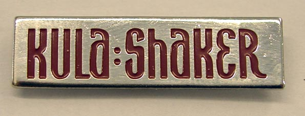
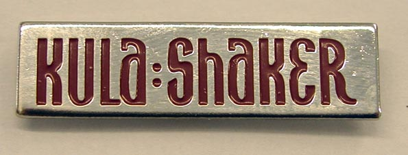

Kula Shaker has released four major studio albums, as well as numerous singles with extensive b-sides, music videos, and EPs. The band has also contributed to film soundtracks and TV advertisements.
K (1996)
Peasants, Pigs and Astronauts (1999)
Strangefolk (2007)
Pilgrims progress (2010)
Read on more about their music videos, extended plays and singles at Discography
 
